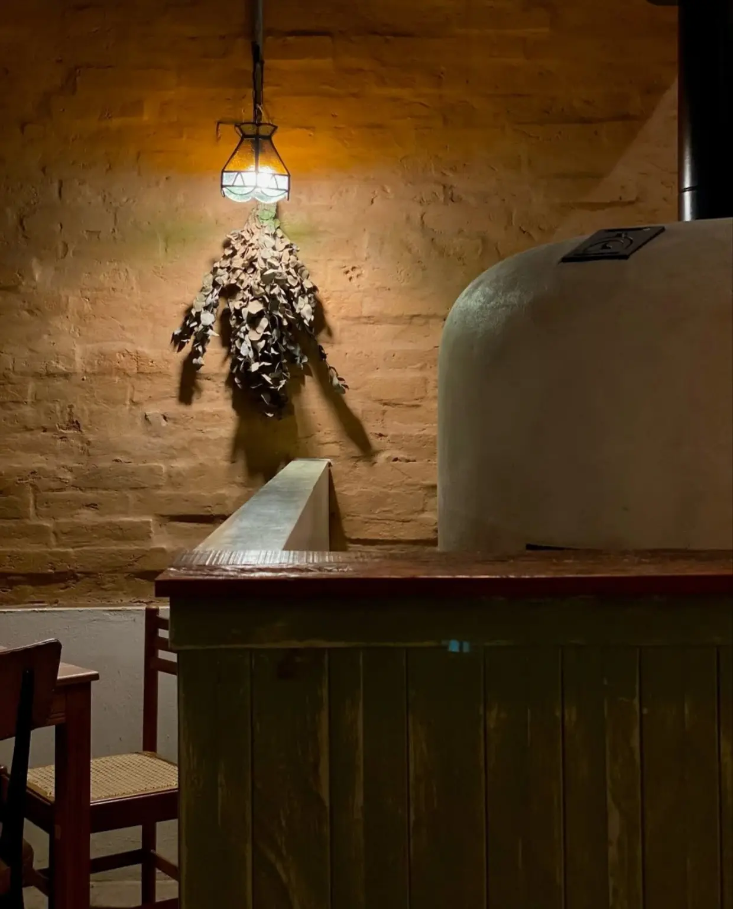
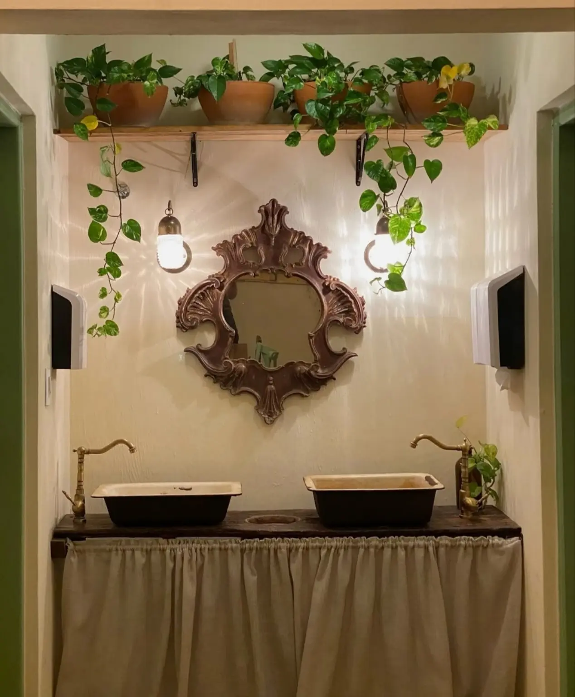
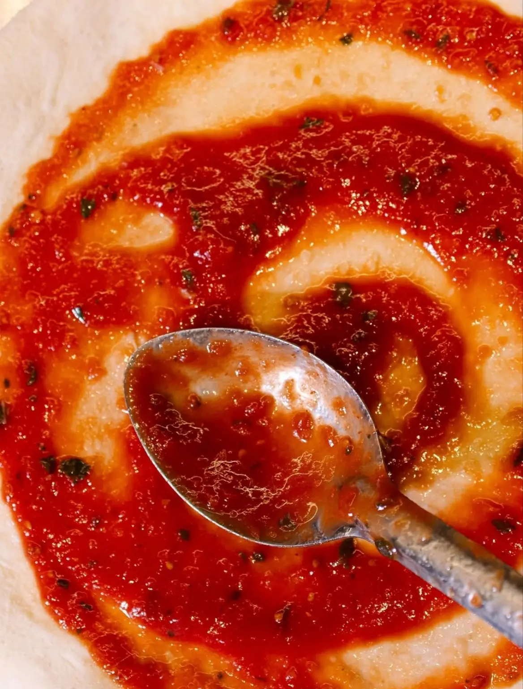
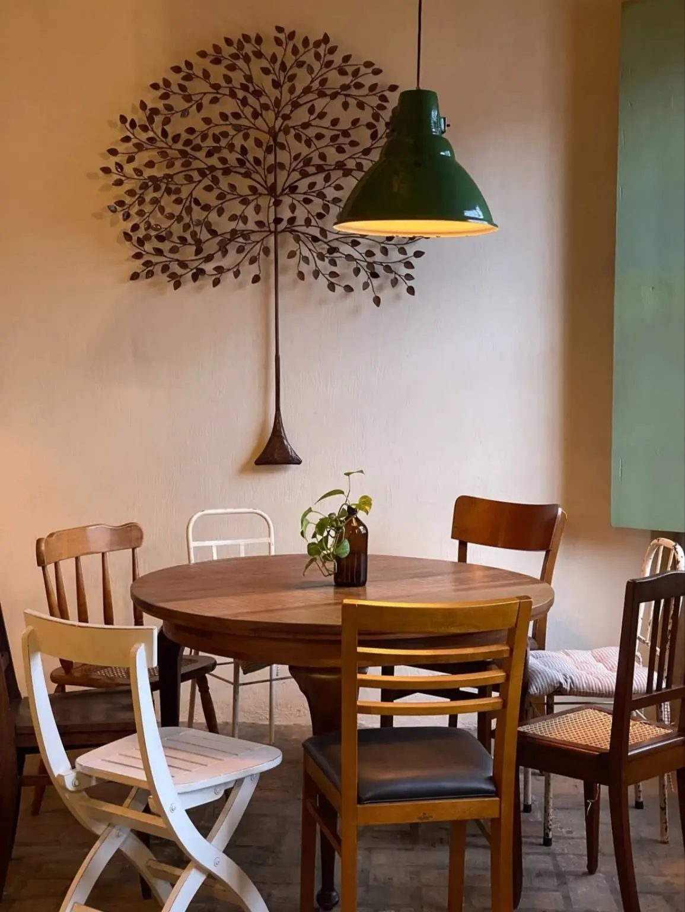

Tempo
Fermentação longa, preparo cuidadoso e respeito por cada etapa.
A Do Quintal combina técnica artesanal, ingredientes de origem e uma hospitalidade descomplicada em uma casa cheia de personalidade.

Mais do que servir pizza, criamos um lugar onde comida, cuidado e convivência ocupam a mesma mesa. A cozinha respeita o descanso da massa, a origem de cada ingrediente e a simplicidade de receitas executadas com atenção.
Essa proposta aparece tanto nos sabores quanto no espaço: luz quente, madeira, plantas e objetos que dão à casa o clima íntimo de um verdadeiro quintal.



Fermentação longa, preparo cuidadoso e respeito por cada etapa.
Ingredientes selecionados e produtores brasileiros presentes no cardápio.
Uma mesa acolhedora para compartilhar pizza, bebida e conversa.